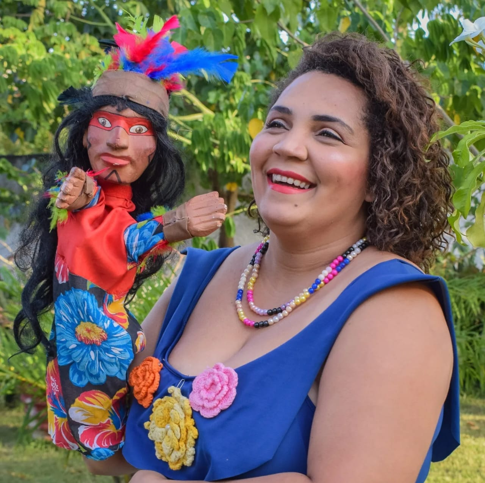
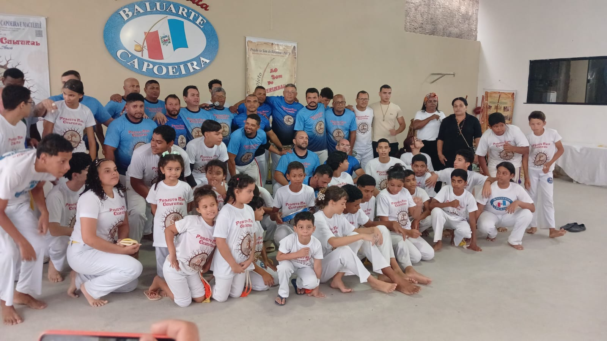
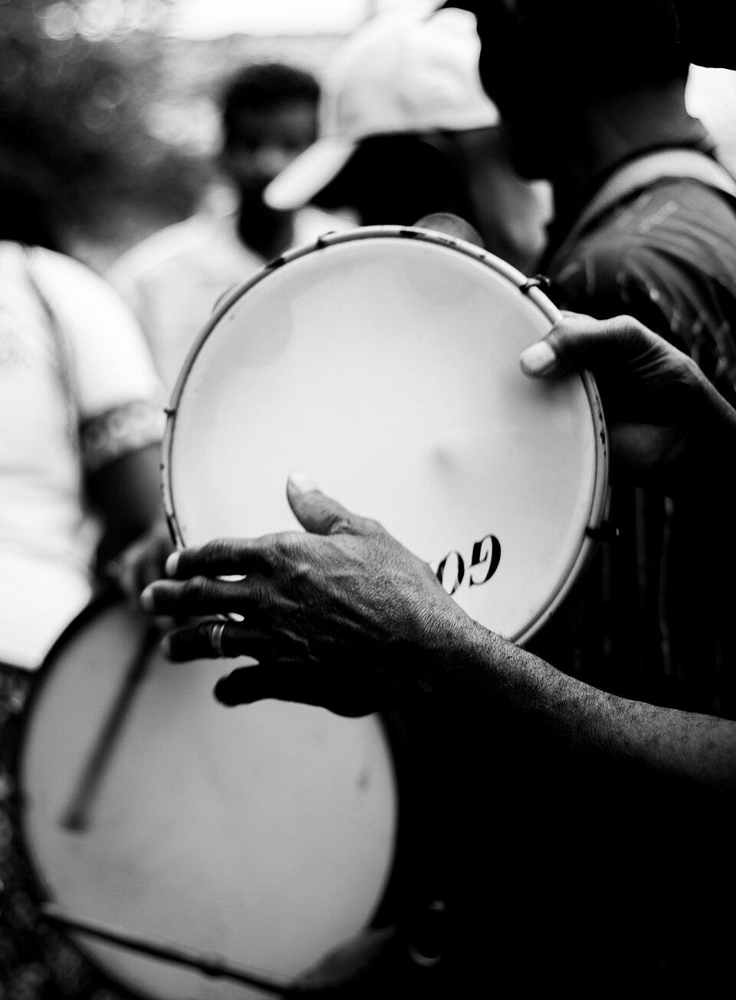
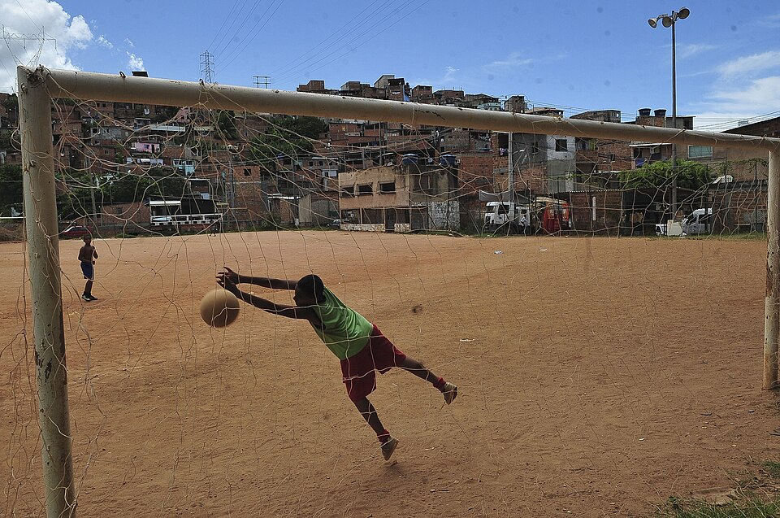
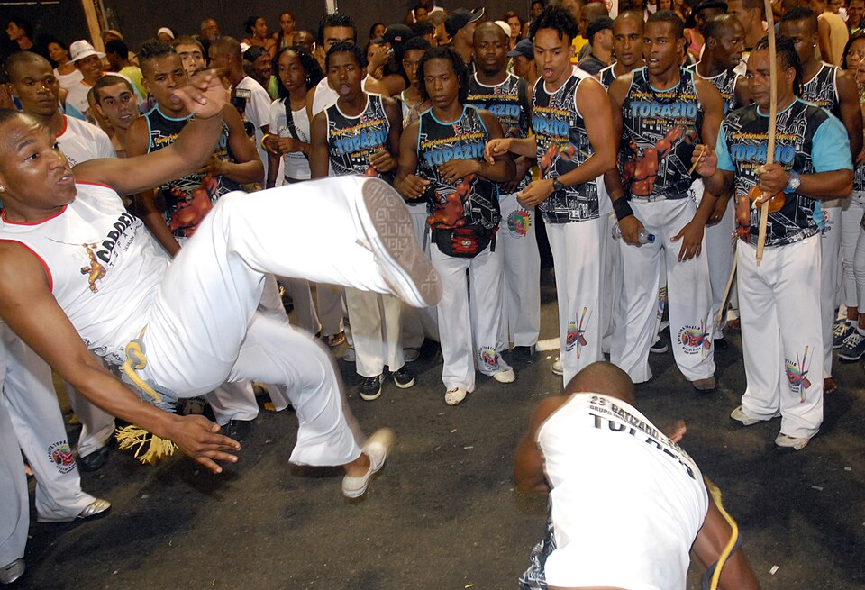
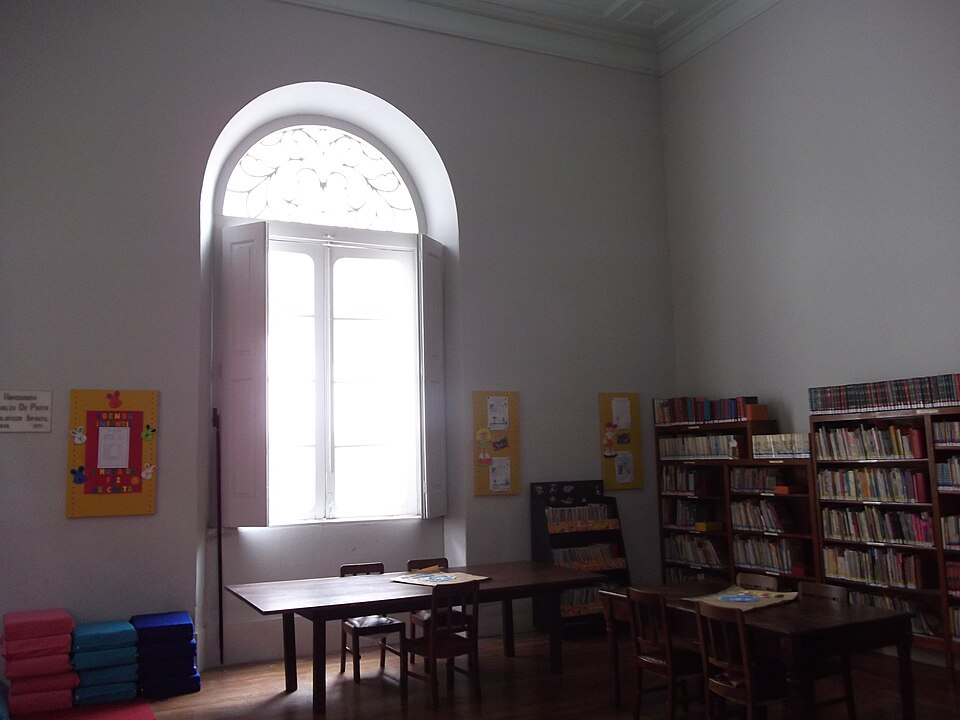

Transformar realidades por meio da arte, da cultura, do esporte, da educação e da participação social, fortalecendo comunidades e ampliando o acesso aos direitos culturais.
Organização da Sociedade Civil · Maceió, Alagoas
Associação Sociocultural Maggu
Um ecossistema cultural, educativo e comunitário que nasce do Ponto de Cultura Teatro Escola Maggu — teatro, cinema, leitura, rádio, esporte e protagonismo juvenil a serviço de Maceió e de seus territórios periféricos.
Mantenedora do Ponto de Cultura Teatro Escola Maggu

Quem somos
Cultura como instrumento de transformação social
A Associação Sociocultural Maggu é uma Organização da Sociedade Civil (OSC), sem fins lucrativos, sediada em Maceió (AL), que atua na promoção da cultura, da educação, do desenvolvimento comunitário e da cidadania.
A instituição acredita que a cultura é um instrumento de transformação social e, por isso, desenvolve programas permanentes que unem formação artística, pesquisa, inovação social e participação cidadã, especialmente em territórios periféricos.

Ecossistema Maggu — quatro iniciativas permanentes coordenadas pela Associação
- Ponto de Cultura Teatro Escola Maggu Mantenedora
- Cineclube Teatro Maggu
- Biblioteca Comunitária Maggu
- Educativa Rádio Web Maggu
Conheça cada iniciativa em detalhe na seção Programas e projetos, logo abaixo.
O que nos guia
Missão, visão e valores
Construir um ambiente permanente de aprendizagem, criação e participação, onde arte, cultura, educação e inovação caminhem juntas para fortalecer pessoas, valorizar identidades e contribuir para o desenvolvimento sustentável das comunidades.
- Cultura popular como direito
- Educação para a cidadania
- Participação comunitária
- Inclusão e direitos humanos
- Sustentabilidade e território
Iniciativas em ação
Programas e projetos
Oito frentes permanentes que unem arte, esporte, leitura, comunicação e protagonismo social. Toque em cada item para ver os detalhes.
01 INFANCIAR — Quando a Rua Volta a SonharDireito ao brincar e ocupação criativa dos espaços públicos.
Programa de desenvolvimento comunitário que promove o direito ao brincar, à convivência e à ocupação criativa dos espaços públicos, integrando arte, cultura, esporte, leitura, educação ambiental, ciência cidadã e fortalecimento dos vínculos comunitários.
02 Ponto de Cultura Teatro Escola MagguFormação artística permanente para todas as idades.
Espaço permanente de formação artística que oferece oficinas, cursos, pesquisas, montagens teatrais, intercâmbios, apresentações e ações educativas voltadas para crianças, adolescentes, jovens e adultos.
03 Esporte na ComunidadeSaúde, inclusão e vínculos por meio do esporte.
Programa de esporte educacional que utiliza atividades esportivas como ferramenta de inclusão social, promoção da saúde, fortalecimento de vínculos e desenvolvimento integral de crianças, adolescentes e jovens.
04 Cineclube Teatro MagguCinema, debate e formação de público.
Promove sessões de cinema, mostras, debates, formação de público e oficinas de audiovisual, ampliando o acesso ao cinema brasileiro e incentivando reflexões sobre cultura, cidadania e direitos humanos.
05 Biblioteca Comunitária MagguMediação e incentivo à leitura.
Incentiva a leitura por meio de mediação, contação de histórias, clubes de leitura, empréstimo de livros e ações de formação de leitores.
06 Educativa Rádio Web MagguComunicação comunitária e memória local.
Canal de comunicação comunitária dedicado à difusão da cultura, da educação, da memória, da informação e da produção artística local por meio de programas, entrevistas, podcasts e transmissões culturais.
07 Observatório Jovens TransformadoresProtagonismo e inovação social juvenil.
Programa de formação e reconhecimento de jovens lideranças, estimulando o protagonismo juvenil, a inovação social, a pesquisa, a cidadania e o desenvolvimento de soluções para os desafios dos territórios.
08 Fórum de Cultura do Benedito BentesArticulação e políticas públicas de cultura.
Espaço permanente de articulação entre artistas, coletivos, organizações e comunidade, fortalecendo as políticas públicas de cultura e a participação social.

De ponta a ponta
Áreas de atuação
Um mosaico de frentes que se cruzam em cada programa da Associação.
- Cultura e artes
- Educação e formação cidadã
- Teatro e artes cênicas
- Audiovisual e cineclubismo
- Comunicação comunitária
- Incentivo à leitura
- Esporte educacional
- Pesquisa social e cultural
- Desenvolvimento comunitário
- Juventude e protagonismo social
- Direitos humanos
- Economia criativa
- Cultura digital
- Sustentabilidade e educação ambiental
Presença no território
Impacto e comunidade
Sem números fechados por aqui — o compromisso é com presença contínua no território e com vínculos construídos ao longo do tempo.

Quem participa
Crianças, adolescentes, jovens, adultos e famílias das comunidades atendidas, além de artistas, educadores e coletivos parceiros.
Onde atuamos
Maceió (AL), com atuação prioritária em territórios periféricos, entre eles o Benedito Bentes.

Faça parte
Participação e apoio
A cultura se sustenta em rede. Veja as formas de caminhar junto com a Associação Sociocultural Maggu.
Voluntariado
Pessoas interessadas em contribuir com oficinas, eventos, produção cultural, comunicação ou apoio administrativo podem manifestar interesse pelos canais oficiais de contato.
Diretoria
Os nomes e as funções da diretoria executiva serão publicados nesta seção após validação institucional.
Em preparaçãoParceiros e apoiadores
Espaço reservado para marcas de parceiros e apoiadores institucionais. A relação será publicada mediante autorização de cada organização.
Em preparaçãoCompromisso institucional
Transparência
Como parte do compromisso com a transparência, a Associação disponibilizará nesta página seus documentos institucionais assim que revisados e aprovados pela diretoria.

Estatuto Social
Documento em preparaçãoAta de Fundação e Assembleias
Será disponibilizada após aprovaçãoRelatórios de Atividades
Serão publicados após aprovaçãoDados cadastrais (CNPJ)
Em atualizaçãoPerguntas frequentes
Tire suas dúvidas
Como posso participar dos programas da Maggu?
Cada programa tem público e formato próprios — de oficinas do Ponto de Cultura ao Cineclube e à Biblioteca Comunitária. As inscrições e a agenda serão divulgadas pelos canais oficiais assim que publicados nesta página.
Como faço para ser voluntário(a)?
É possível manifestar interesse em atuar como voluntário(a) em oficinas, eventos, produção cultural ou apoio administrativo pelos canais oficiais de contato da Associação.
A Associação recebe apoio de empresas e parceiros?
Sim, o apoio institucional é bem-vindo. A relação de parceiros e apoiadores será publicada nesta página conforme autorização de cada organização.
Onde posso consultar o Estatuto, as Atas e os relatórios?
Os documentos institucionais estão em preparação e serão disponibilizados na seção Transparência assim que revisados e aprovados pela diretoria.
Fale com a gente
Contato
Os canais oficiais de contato serão publicados nesta página assim que confirmados pela direção institucional.
Localização
Maceió, Alagoas — Brasil
Telefone
Em breve
Em breve
Redes sociais
Em breve